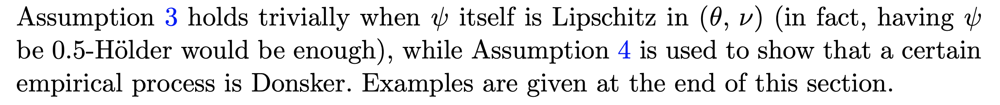
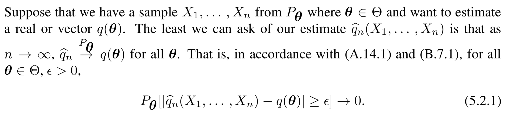

name:opening **Generalized Random Forest**<br> Susan Athey, Julie Tibshirani, and Stefan Wager <br> Summary by Ronak Mehta <br> NeuroData Lunch Meeting: 10/31/2019 <br> <!-- {[BME](https://www.bme.jhu.edu/),[ICM](https://icm.jhu.edu/),[CIS](http://cis.jhu.edu/),[KNDI](http://kavlijhu.org/)}@[JHU](https://www.jhu.edu/) --> <a href="https://neurodata.io"><img src="images/neurodata_purple.png" style="height:430px;"/></a> <!-- <img src="images/funding/jhu_bme_blue.png" STYLE="HEIGHT:95px;"/> --> <!-- <img src="images/funding/KNDI.png" STYLE="HEIGHT:95px;"/> --> <!-- <font color="grey"></font> --> .foot[Slides Format: Joshua T. Vogelstein | <http://neurodata.io/talks>] --- ### Purpose of this Talk 1. Explain how to make theoretical claims to accompany new algorithms 2. Promote understanding of the statistical settings under which random forest is provably successful 3. Give a roadmap for reading this paper and other literature --- ### Mike and Ronak's Favorite Paragraph # # .center[] --- class: middle, inverse ## .center[Statistical Estimation] --- ## The Random Variable $Y$ is a random variable, observed in $\mathcal{Y}$. -- $\mathcal{Y}$ = $\mathbb{R}, \ \mathbb{R}^k$, connectomes, images, etc. -- $Y$ has distribution: $Y \sim F_{Y}$ -- $F_Y$ is in a model $\mathcal{F}$. --- ## The Parameter $\theta: \mathcal{F} \rightarrow \mathbb{R}^k$ is a parameter. $\theta$ eats $F_Y$ and gives as a number/vector that says something about $Y$. -- - Example 1: $\theta(F_Y) = \mathbb{E}[Y]$ is called the mean. -- - Example 2: $\theta(F_Y) = $ the number such that $P[Y \leq \theta] = \frac{q}{100}$ is called the $q$-th quantile (if $\mathcal{Y} = \mathbb{R}$). --- ## Estimating Equations Sometimes, we can write $\theta$ as "that which solves the equation $M_\theta = 0$". -- - Example 1: That which solves $M_\theta = \mathbb{E}[Y] - \theta = 0$ is called the mean. -- - Example 2: That which solves $M_\theta = P[Y \leq \theta] - \frac{q}{100} = 0$ the is called the $q$-th quantile. --- ## Estimating the Parameter We want to know $\theta$ but do not have access to $F_Y$. -- So, we come up with an educated guess based on observations $Y_1, ..., Y_n$ (independent and identically distributed data). --- ## How do we guess $\theta$? First, define some function $\psi\_\theta(Y)$ such that $\mathbb{E}[\psi\_\theta(Y)] = M\_\theta$. -- - Example 1: $$\psi\_\theta(Y) = Y - \theta \rightarrow M\_\theta = \mathbb{E}[Y] - \theta$$. -- - Example 2: $$\psi\_\theta(Y) = \mathbb{I}[Y \leq \theta] - \frac{q}{100} \rightarrow M\_\theta = P[Y \leq \theta] - \frac{q}{100}$$. --- ## How do we guess $\theta$? Then, let the estimate $\hat\theta$ solve $\frac{1}{n}\sum\_{i=1}^n \psi\_\theta(Y_i) = 0$. (We can drop the $\frac{1}{n}$.) -- - Example 1: $\sum\_{i=1}^n (Y\_i - \hat\theta) = 0 \rightarrow \hat\theta = \frac{1}{n} \sum\_{i=1}^n Y\_i $ (sample mean). -- - Example 2: $\sum\_{i=1}^n \mathbb{I}[Y\_i \leq \theta] - \frac{q}{100} = 0 \rightarrow \hat\theta = $ the $q$-th sample quantile. -- $\sum\_{i=1}^n \psi\_\theta(Y_i) = 0$ is called the **estimating equation**. --- ## Consistent Estimation An estimation procedure is **consistent** if $\hat\theta \rightarrow \theta$ (in probability) as $n \rightarrow \infty$. .center[] -- It's the least we can ask for. --- class: middle, inverse ## .center[Conditional Estimation] --- class: middle, inverse ## .center[(Supervised Learning)] --- ## The Game has Changed Now, we not only have a random variable $Y$ that lives in $\mathcal{Y}$, but an associated random variable $X$ that lives in $\mathcal{X}$. -- We wish to estimate not the point $\theta$ but the function $\theta(x)$, which is a parameter of the distribution of $Y$ given $X = x$. -- We write this as $F\_{Y \mid X = x}$, and call $x$ the **test point**. --- ### Conditional Estimating Equations Now, we have $M\_\theta(x)$ such that $M\_\theta(x) = \mathbb{E}[\psi\_\theta(Y) \color{red}{\mid X = x}]$. -- $\psi\_\theta$ has not changed, but $M\_\theta(x)$ now is a function of $x$. -- - Example 1: $$\psi\_\theta(Y) = Y - \theta \rightarrow M\_\theta(x) = \mathbb{E}[Y \color{red}{\mid X = x}] - \theta$$. (Conditional mean) -- - Example 2: $$\psi\_\theta(Y) = \mathbb{I}[Y \leq \theta] - \frac{q}{100} $$ $$\rightarrow M\_\theta(x) = P[Y \leq \theta \color{red}{\mid X = x}] - \frac{q}{100}$$. (Conditional quantile) --- ### How do we guess $\theta$? We still want to solve $M\_\theta(x) = 0$ but we don't know $F\_{Y \mid X = x}$. -- However, we are given $(X_1, Y_1), ..., (X_n, Y_n)$. -- This time, $\hat{\theta}$ solves $\sum\_{i=1}^n \color{red}{\alpha\_i(x)}\color{black} \cdot \psi\_\theta(Y_i) = 0$. -- $\alpha\_i(x)$ is a weight that is high when $X\_i$ and $x$ are close, and 0 otherwise. This mirrors the "conditioned on $X = x$" part. -- $\sum\_{i=1}^n \alpha\_i(x) \psi\_\theta(Y_i) = 0$ is called the **local estimating equation**. --- #### Solving the Local Estimating Equation This equation can actually be solved numerically by an optimization problem. We would like to minimize $$\left|\left|\sum\_{i=1}^n \alpha\_i(x) \psi\_\theta(Y_i)\right|\right|^2$$ with respect to $\theta$, which is equivalent to finding the zero if it exists. --- ### Choosing the Weights In a forest, a typical setting for the weights are as follows. -- Let $L_b(x)$ be the leaf node of $x$ in tree $b$. -- $\alpha\_{bi}(x) = \frac{1}{|L_b(x)|}$ if $X_i$ is in $L_b(x)$, and 0 otherwise. -- $\alpha\_i(x) = \frac{1}{B} \sum\_{b=1}^B \alpha\_{bi}(x)$ --- class: middle, inverse ## .center[Generalized Random Forests] --- ### The Main Result Given Assumptions 1 - 6, and Specification 1, ... </br> $\hat\theta$ that solves $$\sum\_{i=1}^n \psi\_\theta(Y_i)\cdot \alpha_i(x) = 0$$ is consistent. --- ### Assumptions -- Regarding $F\_{Y \mid X = x}$, which we don't know: - Assumption 1 (assume this). -- Regarding the problem/task, i.e. $M\_\theta$ and $\psi_\theta$: - Assumption 2-6 (show these). -- Regarding the way that the forest is built: - Specification 1 (code this). --- ### Assumption 1 **$M\_\theta(x)$ is Lipshitz continuous in $x$.** -- If $x$ changes a little, $M\_\theta(x)$ changes a little. Use the conditional mean as intuition. --- #### Mike and Ronak's Favorite Paragraph Again # # .center[] --- ### Specification 1 **The forest is** - **symmetric**: invariant to permuting indices of training set. - **balanced**: will never place all (remaining) data in one child of a split. - **randomized**: every dimension has a nonzero chance of being chosen at each split. - **honest**: two ways to achieve this, see next slide. - **subsampled**: each tree uses $s \le n$ data points, with $s \rightarrow \infty$ and $\frac{s}{n} \rightarrow 0$. --- ### Honesty - **Double Sample Trees**: Use some samples to build the structure of the tree (learn $\alpha\_i(x)$), and use the others to solve the resulting local estimating equation. - **Propensity Trees**: With multiple labels $(X_i, Y_i, W_i)$, use the $(X_i, W_i)$ to learn the tree, and $(X_i, Y_i)$ to solve the equation. (Some assumptions.) --- ### Your Job -- Come up with cool RF algorithms. -- Write down your $M\_\theta$. Find a $\psi\_\theta$ such that $M\_\theta(x) = \mathbb{E}[\psi\_\theta(Y) \mid X = x]$. -- Think about how your algorithm solves $\sum\_{i=1}^n \alpha\_i(x) \psi\_\theta(Y\_i) = 0$. -- Make sure your $M\_\theta$ and $\psi\_\theta$ adhere to Assumptions 2-6. -- Make sure your forest satisfies Specification 1. -- Congrats! You have a theorem! --- ### Applications *When a math person says applications, they just mean applications to other math problems.* ~ Mauro Maggioni, circa Spring 2018 -- - Local Feature Importance (Mike) - Manifold Forests (Ronan + NDD) - Graph Forests (Jaewon) - Multivariate Regression Forests (Vivek) - Lifelong Forests (Hayden + Ronak) - Uncertainty Forests (Ronak) - Structured Forests (NDD) --- ### One Possible Literature Graph - Bickel and Doksum (2015): Sections 1.1, 2.2.1 - Devroye, Gyorfi, Lugosi (1996): Sections 2.1-2.5, 6.1-6.4, 20.1-20.2 - Meinshausen (2006) - Denil (2014) - Wager and Athey (2018) - Athey, Tibershirani, and Wager (2019) --- class: middle, inverse ## .center[Questions?] --- class: middle, inverse ## .center[That's a wrap!]